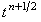

Легко видеть, что для всех трёх подсхем достаточное условие сходимости прогонки
(4.16) выполняется.
Правая часть корректора
(9.20) аппроксимируется относительно точки .
Это означает, что разностный оператор в левой части является
центральной конечной разностью, которая,
как известно, имеет второй
порядок аппроксимации. Следовательно, роль корректора
(9.20) в схеме
предиктор-корректор
(9.17)-(9.20) заключается в повышении порядка аппроксимации схемы по времени:
что делает её более точной по сравнению со схемой расщепления
(9.7)-(9.9).
Для решения корректора
(9.20) используется рекуррентное соотношение:
Итак, роль предиктора
(9.17)-(9.19) в схеме предиктор-корректор
(9.17)-(9.20) заключается в обеспечении абсолютной устойчивости всей схемы;
роль корректора
(9.20) - в повышении порядка аппроксимации схемы по времени.